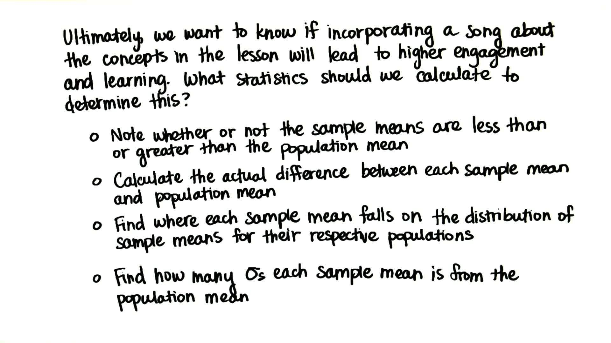

28. 是什么统计数据？
是什么统计数据？
Question:
Start Quiz:

Solution:
INSTRUCTOR NOTE:
我们想知道，听这首关于第九节课提到的假设检验的歌曲是否会提高参与度和学习程度，我们应该计算哪些统计信息来判断这一点呢？
- □ 样本均值是否小于或大于总体均值
- □ 对于每种衡量指标应该计算总体均值和样本均值之间的差别
- □ 算出每个样本均值应该落在每个总体的样本均值分布上的哪个位置
- □ 算出每个样本均值 距离总体均值多少个总体标准偏差